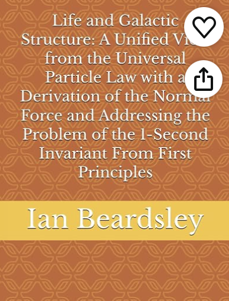
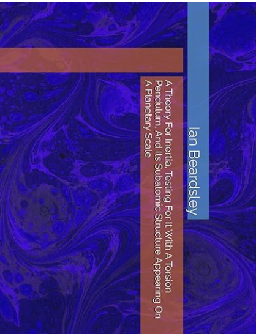

Contact
Contact
Contact: eanbardsley@gmail.com

Imagine a single, fundamental clock—a heartbeat lasting exactly one second—that echoes from the inside of a proton to the edge of the galaxy. That is the central claim of the Universal Particle Law (UPL). It proposes that mass is not a fixed, intrinsic property of matter, but a geometric resistance: when we push an object, we are literally rotating its motion out of the time dimension and into space, and the universe pushes back with a force whose strength is set by a one‑second resonance.
What makes this idea extraordinary is that this same one‑second resonance appears to govern the structure of systems at every scale—from the confinement of quarks inside a proton, to the orbit of the Moon around Earth, to the motion of our Sun around the Milky Way.
